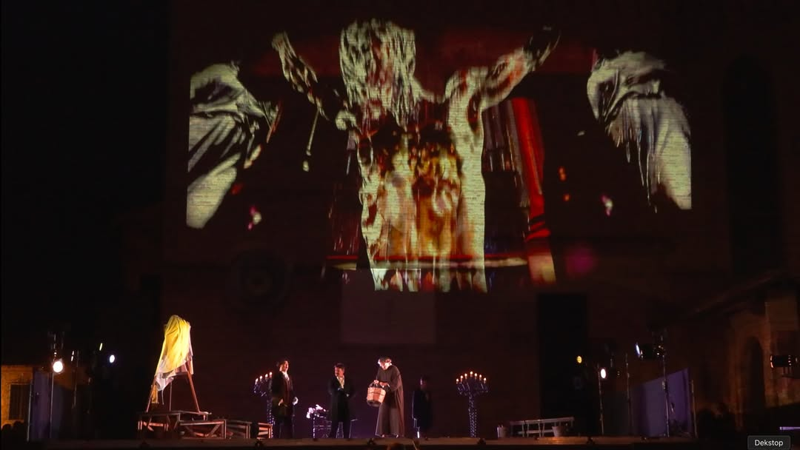
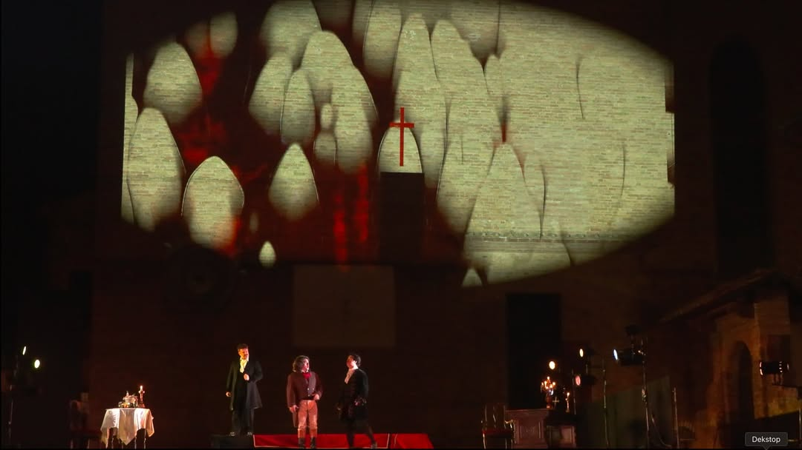
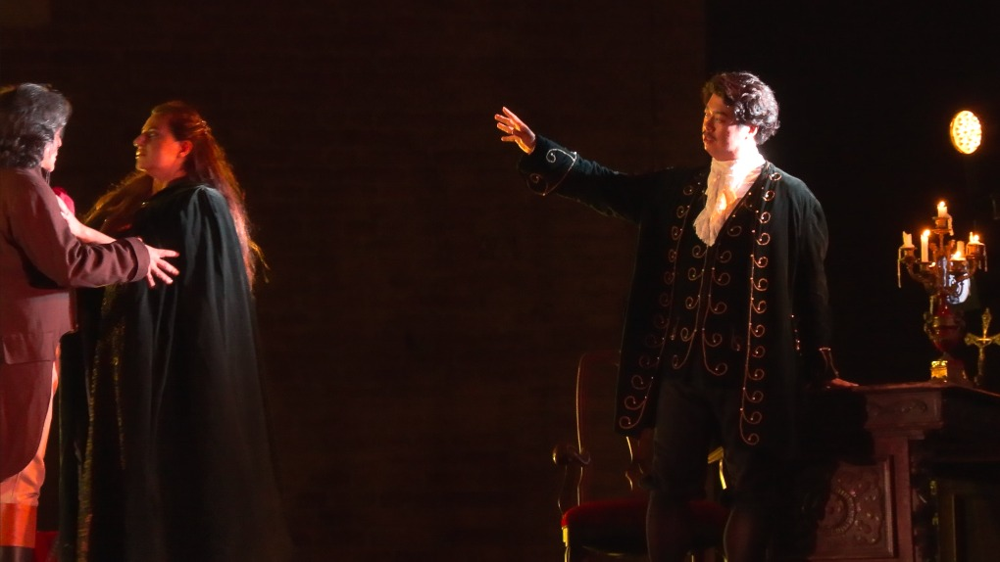
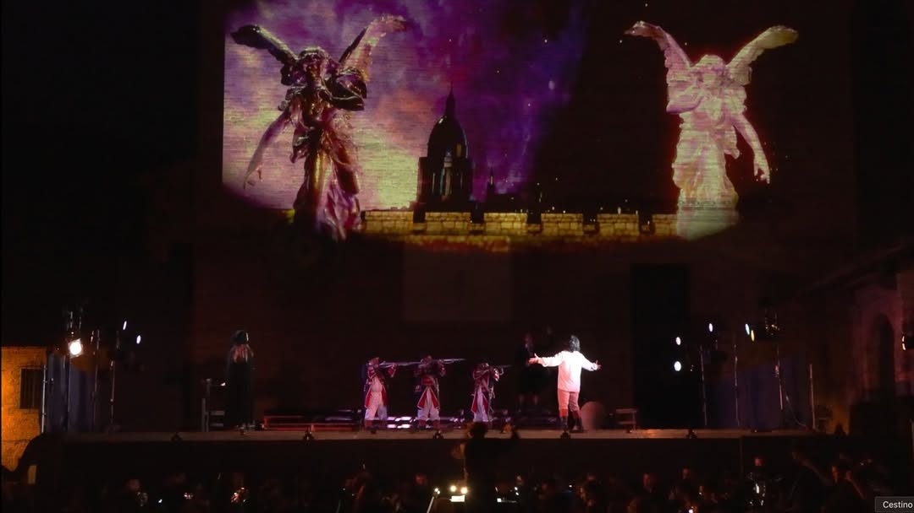
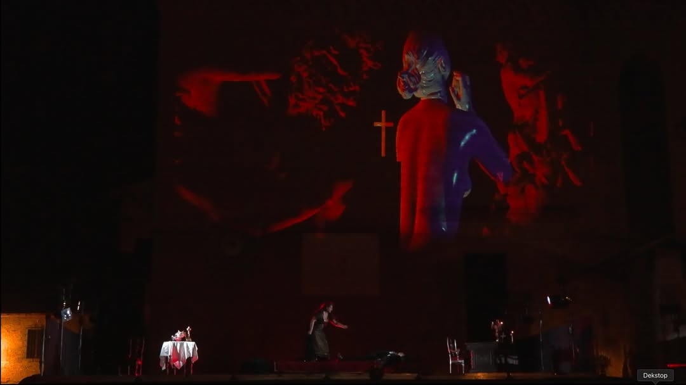
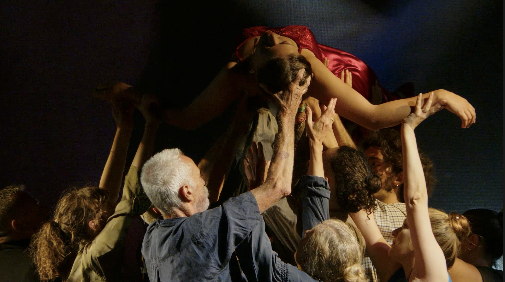
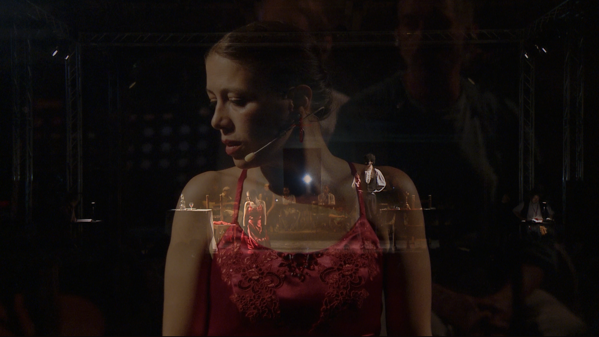
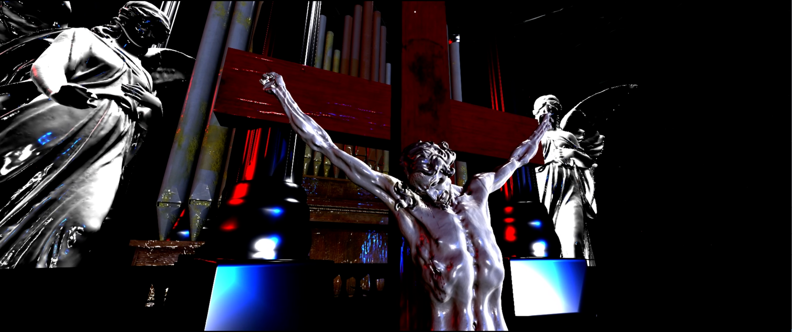
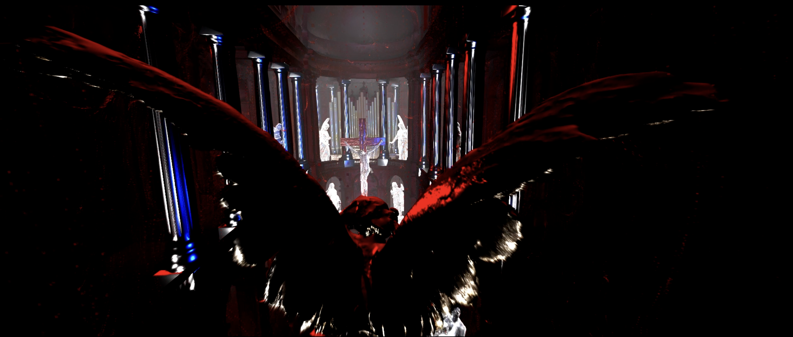

Tosca
Scenografia video per opera
Realizzata con Touchdesigner Regia di Loris Seghizzi, diretta dal Maestro Mario Menicagli





Sezione Classica
Video
Note
Per la 90ª edizione del Festival dell’Opera di San Gimignano, Boris Pimenov ha progettato e realizzato la scenografia virtuale per l’opera Tosca di Giacomo Puccini. L’intervento ridisegna lo spazio scenico attraverso ambienti digitali generati in tempo reale con TouchDesigner, che avvolgono il palcoscenico storico con architetture luminose, texture pittoriche e proiezioni volumetriche.
Il progetto affronta la sfida di far coesistere la tradizione lirica con il linguaggio dell’immagine interattiva: ogni atto possiede una palette visiva distinta, capace di amplificare la drammaturgia pucciniana senza sovrastarla. La scenografia virtuale dialoga con le scene fisiche creando un doppio registro — reale e digitale — che espande la percezione dello spazio e del tempo narrativo dell’opera.
Sezione Ubiqua
Galleria






Video
Note
Tosca d’essai è un’opera ubiqua, immersiva e site-specific, che coinvolge i luoghi del borgo di Lari grazie all’infrastruttura Connessioni ideata da Loris Seghizzi e Mirco Mencacci. Tra musica, teatro e realtà aumentata, lo spettacolo riscrive Puccini in una forma inedita. Un’esperienza unica in Italia. Un esperimento artistico radicale narrato da una drammaturgia multistrato, distribuita nello spazio e nel tempo.
Scarpia, Cavaradossi e Tosca rivivono la tragedia in tempo reale, mentre una troupe gira il film dell’opera: questo duplice registro è il cuore pulsante di Tosca d’essai. Da un lato, il pubblico assiste alla messa in scena dal vivo della vicenda pucciniana; dall’altro, gli stessi gesti, le stesse emozioni e le stesse parole vengono catturate dalle telecamere e trasformate in film.